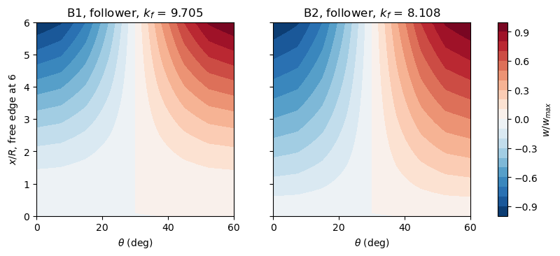
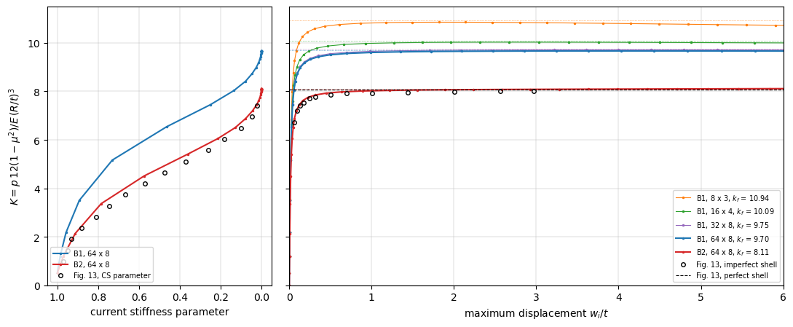

Cantilever cylinder under a follower pressure#
Schweizerhof and Ramm [1], Section 6.4 (Fig. 12 on p. 1110, Table 4 on p. 1111, Fig. 13 on p. 1112), computed the buckling of cylindrical cantilever shells under a uniform external pressure, with the upper edge free and the lower edge hinged, \(E = 2.1 \times 10^6\), \(\mu = 0.3\), for a pressure of constant direction (dead load, index \(c\)) and for a pressure that stays normal to the deformed surface (follower load, index \(f\)). The free edge makes the follower pressure nonconservative: its load stiffness matrix is unsymmetric. The pressure is normalized by their eq. (60),
The three shells are 1: \(L/R = 6\), \(R/t = 100\), \(n = 3\) circumferential waves; 2: \(L/R = 3\), \(R/t = 100\), \(n = 4\); 3: \(L/R = 3\), \(R/t = 500\), \(n = 6\); the lower edge is either B1, “warping completely restrained”, \(v = w = u = m_x = 0\), or B2, “warping partially restrained”, \(v = w = m_x = 0\) with the axial displacement \(u_0\) restrained at one point only. The paper models a sector of \(180°/n\) with 24 bicubic elements, 8 along the axis and 3 around, and symmetrizes the load stiffness matrix for the linear buckling analyses of Table 4 in three ways, its eqs. (63) to (65). Fig. 13 traces the path of shell 1, B1, under the follower pressure, with an imperfection of 1 % of \(t\) in the shape of the linear buckling mode, as the load \(K = p \, 12 (1 - \mu^2)/E \, (R/t)^3\) against the maximum displacement \(w_i/t\), with the current stiffness parameter of Bergan.
Here the same sectors are meshed with the Sanders-type element BFSCCylinderSanders, with the follower pressure of update_fext_follower and its full, unsymmetric, load stiffness matrix of update_KCfollower (first-order area vector, quadratic=0), and the path is traced with the Riks method of structsolve (0.10.0 or newer), counting the negative eigenvalues of the unsymmetric tangent stiffness matrix. The model is in the module
schweizerhof1984_cylinder.py of the folder tests/ of the repository, which also has its test, tests/test_schweizerhof1984_cylinder.py: the identities of the imperfect shell under the follower pressure, the factors of shell 1, B1, of Table 4, and the Riks path of B1 through its maximum. Besides bfsccylinder, the notebook requires structsolve 0.10.0 or newer, composites and Matplotlib.
The model#
The sector has \(x\) from 0, the lower edge, to \(L\), the free edge, and \(y\) from 0 to \(b = \pi R/n\), with \(R = 100\) (the factors \(k\) do not depend on it). With the degrees of freedom \(u\), \(u_{,x}\), \(u_{,y}\), \(v\), \(v_{,x}\), \(v_{,y}\), \(w\), \(w_{,x}\), \(w_{,y}\), \(w_{,xy}\) of the nodes:
\(x = 0\), B1: \(u = u_{,y} = v = v_{,y} = w = w_{,y} = 0\), the rotation \(w_{,x}\) free (\(m_x = 0\));
\(x = 0\), B2: \(v = v_{,y} = w = w_{,y} = 0\), and \(u = 0\) at the node \(x = y = 0\) only, which removes the axial translation of the sector;
\(y = 0\) and \(y = b\), symmetry planes: \(u_{,y} = v = v_{,x} = w_{,y} = w_{,xy} = 0\), such that the sector keeps the modes of \(n\), \(2n\), … waves;
\(x = L\): free.
The pressure of \(k = 1\) is the reference load, negative (external) in the sign convention of the element, so that the load multipliers are the factors \(k\) of Table 4 and the load \(K\) of Fig. 13. The linear buckling problems are
for \(k_c\) and \(k_f\), with \(\boldsymbol{u}_{lin}\) the linear solution of the dead load of \(k = 1\) and \(\boldsymbol{K}_F\) its load stiffness matrix, solved with structsolve.lb, symmetric=False for \(k_f\).
The kinematics: with \(n = 3\) waves over a length of \(6R\) the displacements vary over lengths comparable with \(R\), and the Donnell-type kinematics, whose curvatures are those of a flat plate, are not accurate; the Sanders-type element is used, and the Donnell-type one is shown for comparison in Table 4.
[1]:
import time
import os
import sys
import numpy as np
import matplotlib.pyplot as plt
sys.path.insert(0, os.path.join('..', 'tests'))
import schweizerhof1984_cylinder as sr
for shell, (LR, Rt, n) in sr.SHELLS.items():
L, t, n = sr.shell_geometry(shell)
print('shell %d: L = %g, t = %g, n = %d, sector %g deg, p(k = 1) = %.5f'
% (shell, L, t, n, 180/n, sr.p_ref(t)))
shell 1: L = 600, t = 1, n = 3, sector 60 deg, p(k = 1) = 0.19231
shell 2: L = 300, t = 1, n = 4, sector 45 deg, p(k = 1) = 0.19231
shell 3: L = 300, t = 0.2, n = 6, sector 30 deg, p(k = 1) = 0.00154
Convergence of the linear buckling factors#
Shell 1, B1 and B2, with \(n_x\) elements along the axis and \(n_y\) around the \(60°\) sector:
[2]:
for bc, meshes in (('B1', ((8, 3), (16, 4), (32, 4), (32, 8), (32, 12),
(64, 8), (128, 8), (128, 12))),
('B2', ((8, 3), (16, 4), (32, 8), (64, 8), (128, 8)))):
for nx, ny in meshes:
t0 = time.perf_counter()
model = sr.CantileverModel(1, bc, nx, ny)
kc, mc, _ = sr.linear_buckling(model, 'dead')
kf, mf, _ = sr.linear_buckling(model, 'follower')
print('%s %3d x %2d, %5d unknowns: k_c %.4f (n = %d), k_f %.4f '
'(n = %d), %4.1f s'
% (bc, nx, ny, model.bu.sum(), kc[0], sr.num_waves(model, mc[:, 0]),
kf[0], sr.num_waves(model, mf[:, 0]),
time.perf_counter() - t0))
B1 8 x 3, 252 unknowns: k_c 12.2919 (n = 3), k_f 10.9432 (n = 3), 0.1 s
B1 16 x 4, 656 unknowns: k_c 11.3324 (n = 3), k_f 10.0889 (n = 3), 0.2 s
B1 32 x 4, 1296 unknowns: k_c 11.1109 (n = 3), k_f 9.8920 (n = 3), 0.2 s
B1 32 x 8, 2592 unknowns: k_c 10.9546 (n = 3), k_f 9.7527 (n = 3), 0.7 s
B1 32 x 12, 3888 unknowns: k_c 10.9432 (n = 3), k_f 9.7426 (n = 3), 2.1 s
B1 64 x 8, 5152 unknowns: k_c 10.9006 (n = 3), k_f 9.7048 (n = 3), 2.3 s
B1 128 x 8, 10272 unknowns: k_c 10.8870 (n = 3), k_f 9.6926 (n = 3), 4.6 s
B1 128 x 12, 15408 unknowns: k_c 10.8770 (n = 3), k_f 9.6838 (n = 3), 8.8 s
B2 8 x 3, 257 unknowns: k_c 10.1728 (n = 3), k_f 9.0534 (n = 3), 0.1 s
B2 16 x 4, 663 unknowns: k_c 9.4341 (n = 3), k_f 8.3956 (n = 3), 0.3 s
B2 32 x 8, 2607 unknowns: k_c 9.1474 (n = 3), k_f 8.1404 (n = 3), 2.9 s
B2 64 x 8, 5167 unknowns: k_c 9.1110 (n = 3), k_f 8.1080 (n = 3), 11.8 s
B2 128 x 8, 10287 unknowns: k_c 9.1018 (n = 3), k_f 8.0999 (n = 3), 24.7 s
The circumferential direction converges with 8 elements over the \(60°\) sector (12 change the factors by 0.1 %), and the axial one slowly, from the bending boundary layer at the hinged edge: with 8 elements around, the factors change by 0.4 % from 32 to 64 and by 0.1 % from 64 to 128 elements along the axis. The 64 x 8 mesh is within 0.2 % of the 128 x 12 one, \(k_c = 10.877\) and \(k_f = 9.684\) for B1, and is used below. The linear buckling mode has \(n = 3\) waves in every case, as in the paper.
Table 4#
The three shells, 64 x 8 elements, both kinematics; for the Sanders-type kinematics also \(k_f\) with the load stiffness matrix symmetrized by eqs. (63), (64) and (65) of the paper: with its skew part \(\boldsymbol{S} =
(\boldsymbol{K}_F - \boldsymbol{K}_F^\top)/2 = [\boldsymbol{0}\
\hat{\boldsymbol{K}};\ -\hat{\boldsymbol{K}}^\top\ \boldsymbol{0}]\), which couples the in-plane degrees of freedom with those of \(w\), (63) is the symmetric part, and (64) and (65) add and subtract \([\boldsymbol{0}\
\hat{\boldsymbol{K}};\ \hat{\boldsymbol{K}}^\top\ \boldsymbol{0}]\) (symmetrized_KF of the module).
[3]:
table = {}
for shell in (1, 2, 3):
for bc in ('B2', 'B1'):
for kin in ('sanders', 'donnell'):
model = sr.CantileverModel(shell, bc, 64, 8, kin)
kc, mc, _ = sr.linear_buckling(model, 'dead')
kf, mf, _ = sr.linear_buckling(model, 'follower')
sym = []
if kin == 'sanders':
for variant in (63, 64, 65):
k, _, _ = sr.linear_buckling(
model, KF=sr.symmetrized_KF(model, variant))
sym.append(k[0])
table[shell, bc, kin] = (kc[0], kf[0], sym,
sr.num_waves(model, mf[:, 0]))
print('%-5s %-3s %-8s %8s %8s %6s %-24s | %7s %-20s'
% ('shell', 'bc', 'kin.', 'k_c', 'k_f', '%', 'k_f (63), (64), (65)',
'paper', 'k_c, k_f'))
for (shell, bc, kin), (kc, kf, sym, n) in table.items():
pc, pf = sr.TABLE4[shell, bc]
print('%-5d %-3s %-8s %8.3f %8.3f %6.1f %-24s | %7.2f %s'
% (shell, bc, kin, kc, kf, 100*(kc - kf)/kf,
', '.join('%.3f' % k for k in sym), pc,
', '.join('%.2f' % k for k in pf)))
shell bc kin. k_c k_f % k_f (63), (64), (65) | paper k_c, k_f
1 B2 sanders 9.111 8.108 12.4 8.108, 8.117, 8.099 | 9.11 8.10, 8.09, 8.12
1 B2 donnell 9.106 8.203 11.0 | 9.11 8.10, 8.09, 8.12
1 B1 sanders 10.901 9.705 12.3 9.705, 9.724, 9.685 | 10.88 9.70
1 B1 donnell 10.529 9.488 11.0 | 10.88 9.70
2 B2 sanders 16.389 15.386 6.5 15.386, 15.408, 15.364 | 16.43 15.42, 15.38, 15.46
2 B2 donnell 16.387 15.442 6.1 | 16.43 15.42, 15.38, 15.46
2 B1 sanders 20.797 19.532 6.5 19.532, 19.577, 19.487 | 20.85 19.58
2 B1 donnell 20.280 19.117 6.1 | 20.85 19.58
3 B2 sanders 36.483 35.479 2.8 35.479, 35.489, 35.470 | 36.48 35.48, 35.46, 35.50
3 B2 donnell 36.476 35.500 2.8 | 36.48 35.48, 35.46, 35.50
3 B1 sanders 45.797 44.541 2.8 44.541, 44.561, 44.520 | 45.83
3 B1 donnell 45.290 44.081 2.7 | 45.83
With the Sanders-type kinematics, all the factors of Table 4 are reproduced within 0.3 %: shell 1, B1, \(k_c = 10.90\) and \(k_f = 9.70\) (10.88 and 9.70), B2, 9.11 and 8.11 (9.11 and 8.10); shell 2, B1, 20.80 and 19.53 (20.85 and 19.58), B2, 16.39 and 15.39 (16.43 and 15.42); shell 3, B2, 36.48 and 35.48 (36.48 and 35.48), B1, \(k_c = 45.80\) (45.83). The paper gives no \(k_f\) of shell 3, B1; the model gives 44.54. The relative differences \((k_c - k_f)/k_f\) of the paper, 12.5 %, 12.3 %, 6.5 %, 6.5 % and 2.8 %, are those of the model, 12.4 %, 12.3 %, 6.5 %, 6.5 % and 2.8 %. The nonconservative part of the load stiffness matrix has little influence, as the paper concludes: the symmetric part alone, eq. (63), gives the factor of the full unsymmetric matrix to four digits, and eqs. (64) and (65) bracket it by \(\pm 0.2\) %. The paper’s (64) and (65) are in the reverse order, 8.09 and 8.12 for shell 1, B2, against 8.117 and 8.099 here; adding or subtracting the substitute matrix depends on the sign convention of the load stiffness matrix and on which block is called \(\hat{\boldsymbol{K}}\), which the paper does not state, and the spread, 0.03, is the same.
The Donnell-type kinematics underestimate the B1 factors of the long shell 1 by 3.4 % (\(k_c\)) and 2.2 % (\(k_f\)), and those of shell 2 by 2.5 % and 2.1 %, whereas for B2 they agree within 0.05 % in \(k_c\) and 1.2 % in \(k_f\); with \(n = 3\) waves the terms in \(1/R\) of the Sanders-type curvatures and rotations matter, and the Sanders-type element is the one compared with the paper. The closed cylinder confirms that \(n = 3\) is the lowest mode of shell 1, B1, at the factors of the sector, with \(n = 4\) next, 16.40 and 15.38.
The sector of \(60°\) keeps only the modes of 3, 6, … waves. The closed cylinder, shell 1, B1, 64 x 48 elements around the whole circumference, gives the lowest modes of any number of waves, each twice (\(\cos n\theta\) and \(\sin n\theta\)):
[4]:
model = sr.CantileverModel(1, 'B1', 64, 48, full=True)
for load in ('dead', 'follower'):
k, modes, _ = sr.linear_buckling(model, load, num_eigvalues=6)
print('%-8s k = %s, n = %s' % (load, np.array2string(k, precision=3),
[sr.num_waves(model, modes[:, i]) for i in range(6)]))
dead k = [10.901 10.901 16.402 16.402 25.156 25.156], n = [3, 3, 4, 4, 5, 5]
follower k = [ 9.705 9.705 15.384 15.384 23.328 23.328], n = [3, 3, 4, 4, 2, 2]
The lowest modes of the sector, 64 x 8 elements, \(w\) normalized:
[5]:
fig, axes = plt.subplots(1, 2, figsize=(10, 3.6), sharey=True)
for ax, bc in zip(axes, ('B1', 'B2')):
model = sr.CantileverModel(1, bc, 64, 8)
kf, modes, _ = sr.linear_buckling(model, 'follower')
w = modes[6::10, 0].reshape(65, 9)
w = w/w.flat[np.argmax(np.abs(w))]
cs = ax.contourf(model.y.reshape(65, 9)/sr.R*180/np.pi,
model.x.reshape(65, 9)/sr.R, w, 21, cmap='RdBu_r')
ax.set_xlabel(r'$\theta$ (deg)')
ax.set_title('%s, follower, $k_f$ = %.3f' % (bc, kf[0]))
axes[0].set_ylabel('$x/R$, free edge at 6')
fig.colorbar(cs, ax=axes, label='$w/w_{max}$')
plt.show()

Riks analyses of the imperfect shell, Fig. 13#
The imperfection is the \(w\) part of the lowest mode of the follower pressure, scaled to a largest \(|w_0|\) of 1 % of \(t\), outwards at the free edge. The element takes no initial geometric imperfection; it is added exactly as in the tutorial of the cylinder of Simo, Fox and Rifai: the membrane strains of the imperfect shell are \(\boldsymbol{\varepsilon} (\boldsymbol{u} + \boldsymbol{u}_0) - \boldsymbol{\varepsilon} (\boldsymbol{u}_0)\) and its curvatures \(\boldsymbol{\kappa} (\boldsymbol{u})\), which gives
The derivation needs only non-linear membrane strains that are quadratic forms of the rotations \(\boldsymbol{G} \boldsymbol{u}\), and holds for the Sanders-type kinematics with the rows \(\boldsymbol{S}^w_{,x}\) and \(\boldsymbol{S}^w_{,y} - \boldsymbol{S}^v/R\) of \(\boldsymbol{G}\); it is verified in tests/test_schweizerhof1984_cylinder.py against the gradient of a strain energy computed independently of the kernels. The pressure acts on the imperfect surface, and the
residual is
with calc_fext the force vector \(k \boldsymbol{F}_p(\boldsymbol{u}_0)\) and calc_fint the rest, the callables receiving the load factor inc from structsolve (class FollowerCylinder). The tangent stiffness matrix of the kernels, \(\boldsymbol{K}_{C0} + \boldsymbol{K}_{CNL} +
\boldsymbol{K}_G\), is assembled by CantileverModel.calc_KT, vectorized over the elements with NumPy, equal to that of update_KCNL to the round-off and about 7 times faster than this kernel of the Sanders-type element, which takes most of the run time otherwise.
The Riks method starts with an increment of 0.5 of \(k\) and stops at the first increment with a largest \(|w|\) of \(3t\), the end of the axis of Fig.
With
inertia=Trueandinertia_num_eigvals=6structsolve factorizes the tangent stiffness matrix of every converged increment with SuperLU and records the sign of its determinant and, since the matrix is unsymmetric and PARDISO’s inertia does not apply, the number of negative real eigenvalues among the 6 of smallest magnitude, by shift-invert with ARPACK on the LU factorization. The current stiffness parameter of Bergan [2] is computed as the stiffness \(\Delta k/\|\Delta \boldsymbol{u}\|\) of each increment, with the Euclidean norm of the increment of the unknown degrees of freedom, over that of the first increment.
[6]:
runs = {}
for bc, nx, ny in (('B1', 8, 3), ('B1', 16, 4), ('B1', 32, 8), ('B1', 64, 8),
('B2', 64, 8)):
r = sr.run_riks(1, bc, nx, ny, wmax=6.)
runs[bc, nx, ny] = r
an = r['an']
fext = an.calc_fext()
res = max(np.linalg.norm(an.calc_fint(c, inc=k) - k*fext)
/np.linalg.norm(k*fext) for k, c in zip(an.increments, an.cs))
ks, wt, neg, det = r['ks'], r['wt'], np.array(r['neg']), np.array(r['det'])
imax = np.argmax(ks)
print('%s %2d x %d: k_f (linear) %.4f, %3d increments, %5.1f s, max. '
'residual %.0e; maximum k %.4f at w/t %.3f%s'
% (bc, nx, ny, r['k_lin'], len(ks) - 1, r['elapsed'], res,
ks[imax], wt[imax], ' (last increment)' if imax == len(ks) - 1
else ''))
print(' negative eigenvalues: %s; determinant signs: %s'
% (dict(zip(*np.unique(neg, return_counts=True))),
dict(zip(*np.unique(det, return_counts=True)))))
first = np.flatnonzero(neg > 0)
if first.size:
i = first[0]
print(' first negative eigenvalue at increment %d, k %.4f, w/t '
'%.3f, after the maximum by %.1e in k' % (i + 1, ks[i + 1],
wt[i + 1], ks[imax] - ks[i + 1]))
B1 8 x 3: k_f (linear) 10.9432, 33 increments, 2.2 s, max. residual 1e-09; maximum k 10.8551 at w/t 1.816
negative eigenvalues: {np.int64(0): np.int64(20), np.int64(1): np.int64(13)}; determinant signs: {np.int64(-1): np.int64(13), np.int64(1): np.int64(20)}
first negative eigenvalue at increment 21, k 10.8540, w/t 2.140, after the maximum by 1.1e-03 in k
B1 16 x 4: k_f (linear) 10.0889, 31 increments, 5.9 s, max. residual 2e-09; maximum k 10.0301 at w/t 2.669
negative eigenvalues: {np.int64(0): np.int64(22), np.int64(1): np.int64(9)}; determinant signs: {np.int64(-1): np.int64(9), np.int64(1): np.int64(22)}
first negative eigenvalue at increment 23, k 10.0296, w/t 3.028, after the maximum by 4.9e-04 in k
B1 32 x 8: k_f (linear) 9.7527, 30 increments, 23.3 s, max. residual 4e-09; maximum k 9.7154 at w/t 3.994
negative eigenvalues: {np.int64(0): np.int64(25), np.int64(1): np.int64(5)}; determinant signs: {np.int64(-1): np.int64(5), np.int64(1): np.int64(25)}
first negative eigenvalue at increment 26, k 9.7152, w/t 4.391, after the maximum by 1.9e-04 in k
B1 64 x 8: k_f (linear) 9.7048, 30 increments, 46.6 s, max. residual 3e-09; maximum k 9.6688 at w/t 4.033
negative eigenvalues: {np.int64(0): np.int64(25), np.int64(1): np.int64(5)}; determinant signs: {np.int64(-1): np.int64(5), np.int64(1): np.int64(25)}
first negative eigenvalue at increment 26, k 9.6687, w/t 4.433, after the maximum by 6.4e-05 in k
B2 64 x 8: k_f (linear) 8.1080, 32 increments, 196.2 s, max. residual 1e-09; maximum k 8.1154 at w/t 6.214 (last increment)
negative eigenvalues: {np.int64(0): np.int64(32)}; determinant signs: {np.int64(1): np.int64(32)}
The residual of every converged increment, that of the whole follower pressure on the imperfect shell, is below \(10^{-8}\) of the load. The iterations converge quadratically, with 3 to 5 corrections per increment, because calc_fext declares the configuration c and returns the load vector of the current configuration \(\boldsymbol{F}_p(\boldsymbol{u} +
\boldsymbol{u}_0) = -\partial \boldsymbol{R}/\partial k\): with the constant reference vector instead, the bordered system of the Riks method misses the term \(\partial \boldsymbol{F}_p/\partial \boldsymbol{u} \, \boldsymbol{u}\) of the derivative, the iterations converge linearly, by a factor of about 0.1 per correction, and the analyses take ten times longer.
Shell 1, B1: the load rises monotonically to a very flat maximum, \(k = 9.669\) at \(w/t = 4.03\) (64 x 8), 0.4 % below the linear \(k_f\) of the same mesh, and then decreases slowly; the maximum converges with the mesh like \(k_f\), 9.715 with 32 x 8 elements, 9.657 with 128 x 8 (run separately, 74 s). It is a limit point, not a bifurcation: the count of negative eigenvalues of the tangent stiffness matrix is 0 up to the maximum and 1 from the first increment after it, together with the sign of the determinant, and stays 1 up to \(w/t = 6\) (8 in a separate run). Since the count never exceeds 1, the sign of the determinant alone sees the same critical point here. The coarse meshes have their maximum at smaller deflections, 1.8 (8 x 3) and 2.7 (16 x 4), with the same pattern. With B2 the load still rises at \(w/t = 6\) (8.12 at 6.2, and 8.163 at \(w/t = 8\) with 32 x 8 elements in a separate run), and the count stays 0: there is no critical point on the computed path.
[7]:
fig, (ax0, ax1) = plt.subplots(1, 2, figsize=(11, 4.6), sharey=True,
gridspec_kw=dict(width_ratios=(1, 2.2)))
colors = {('B1', 8, 3): 'C1', ('B1', 16, 4): 'C2', ('B1', 32, 8): 'C4',
('B1', 64, 8): 'C0', ('B2', 64, 8): 'C3'}
for key, r in runs.items():
bc, nx, ny = key
ax1.plot(r['wt'], r['ks'], '-', color=colors[key],
marker='.', ms=3, lw=1.5 if nx == 64 else 0.8,
label='%s, %d x %d, $k_f$ = %.2f' % (bc, nx, ny, r['k_lin']))
ax1.axhline(r['k_lin'], color=colors[key], lw=0.5, ls=':')
if nx == 64:
ax0.plot(r['cs_param'], r['ks'][1:], '.-', ms=3, color=colors[key],
label='%s, %d x %d' % key)
d = np.array(sr.FIG13_IMPERFECT)
ax1.plot(d[:, 0], d[:, 1], 'o', mfc='none', color='k', ms=4,
label='Fig. 13, imperfect shell')
ax1.axhline(sr.FIG13_PERFECT, color='k', lw=0.8, ls='--',
label='Fig. 13, perfect shell')
d = np.array(sr.FIG13_CS)
ax0.plot(d[:, 0], d[:, 1], 'o', mfc='none', color='k', ms=4,
label='Fig. 13, CS parameter')
ax0.set_xlim(1.05, -0.05)
ax0.set_xlabel('current stiffness parameter')
ax0.set_ylabel(r'$K = p \, 12 (1 - \mu^2)/E \, (R/t)^3$')
ax0.legend(fontsize=7, loc='lower left')
ax1.set_xlim(0, 6)
ax1.set_ylim(0, 11.5)
ax1.set_xlabel('maximum displacement $w_i/t$')
ax1.legend(fontsize=7, loc='lower right')
for ax in (ax0, ax1):
ax.grid(lw=0.3)
fig.tight_layout()
plt.show()

Fig. 13 is read on the page rendered at 300 dpi, from the centre line of the thick curve, with the axes calibrated on their ticks, to about \(\pm 0.05\) in \(K\) and \(\pm 0.01\) in \(w_i/t\); the horizontal line of the perfect shell is at \(K = 8.06\), and the curve of the imperfect shell reaches 8.01 at \(w_i/t = 3\) without a maximum. The table compares the curve with the paths of B1 and B2 (64 x 8) at the abscissae of the readings, and the current stiffness parameter at the ordinates of the dashed curve (read to \(\pm 0.02\)):
[8]:
d = np.array(sr.FIG13_IMPERFECT)
print('%6s %8s %8s %8s' % ('w/t', 'Fig. 13', 'B1 64x8', 'B2 64x8'))
for wt, K in d:
print('%6.3f %8.2f %8.3f %8.3f'
% (wt, K, np.interp(wt, runs['B1', 64, 8]['wt'], runs['B1', 64, 8]['ks']),
np.interp(wt, runs['B2', 64, 8]['wt'], runs['B2', 64, 8]['ks'])))
d = np.array(sr.FIG13_CS)
print()
print('%6s %10s %10s %10s' % ('K', 'CS Fig. 13', 'CS B1 64x8', 'CS B2 64x8'))
for cs, K in d:
out = []
for key in (('B1', 64, 8), ('B2', 64, 8)):
r = runs[key]
out.append(np.interp(K, r['ks'][1:], r['cs_param']))
print('%6.2f %10.3f %10.3f %10.3f' % ((K, cs) + tuple(out)))
w/t Fig. 13 B1 64x8 B2 64x8
0.058 6.72 8.089 6.773
0.095 7.19 8.695 7.265
0.133 7.41 8.983 7.497
0.170 7.54 9.128 7.633
0.245 7.71 9.306 7.774
0.319 7.77 9.394 7.854
0.506 7.85 9.512 7.943
0.693 7.91 9.563 7.988
1.002 7.93 9.606 8.025
1.439 7.95 9.635 8.051
2.007 7.99 9.653 8.068
2.559 8.00 9.661 8.079
2.970 8.01 9.665 8.085
K CS Fig. 13 CS B1 64x8 CS B2 64x8
0.98 0.970 0.990 0.980
1.44 0.948 0.979 0.955
1.90 0.930 0.965 0.927
2.36 0.880 0.948 0.889
2.82 0.810 0.926 0.842
3.28 0.747 0.903 0.794
3.74 0.667 0.869 0.716
4.20 0.570 0.824 0.632
4.66 0.475 0.779 0.539
5.11 0.370 0.736 0.432
5.57 0.260 0.652 0.324
6.03 0.180 0.563 0.218
6.49 0.100 0.474 0.131
6.95 0.047 0.368 0.070
7.41 0.020 0.260 0.026
The path of B1 does not match Fig. 13: its plateau, 9.67, is 21 % above the 8.0 of the figure, as is its \(k_f\), 9.70 in Table 4 and here. The path of B2 matches it: within 0.10 (1.3 %) at every reading, the plateau 8.09 at \(w_i/t = 3\) against 8.01, with the knee at the same place, \(K = 6.77\) and 7.27 at \(w_i/t = 0.058\) and 0.095 against 6.72 and 7.19, and the current stiffness parameter within 0.07, 0.5 at \(K = 4.55\) in the figure and 4.85 here, a difference of the size of the error of the secant estimate of an incremental quantity over the increments of the Riks method, which are not those of the paper. The horizontal line of the perfect shell in the figure, 8.06, is the \(k_f\) of B2 of Table 4, 8.09 to 8.12, and of this model, 8.11, within 0.6 %, and far from that of B1, 9.70. The text of the paper, p. 1111, says that the nonlinear analysis is of shell 1 “with boundary conditions B1”; the figure, its perfect-shell line and its current stiffness parameter are those of B2, and the label of the text is most likely wrong. The conclusion that the paper draws from the figure, that the linear buckling load with the symmetrized load stiffness matrix is an upper bound approached by the imperfect shell, holds for both boundary conditions: with B1 the path tends to the limit point 0.4 % below \(k_f\), with B2 it rises slowly to \(k_f\) and beyond it, the post-buckling path of the perfect shell being stable at least up to \(w/t = 8\).
References#
[1] Schweizerhof, K., and Ramm, E., Displacement dependent pressure loads in nonlinear finite element analyses, Computers & Structures, 18(6), 1099-1114, 1984, doi:10.1016/0045-7949(84)90154-8.
[2] Bergan, P. G., Automated incremental-iterative solution schemes, in Numerical Methods for Nonlinear Problems, edited by C. Taylor, E. Hinton and D. R. J. Owen, Pineridge Press, Swansea, 1980 (ref. [7] of [1]).